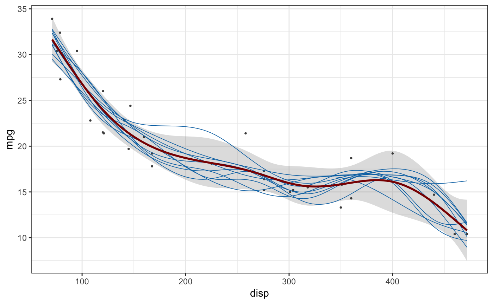
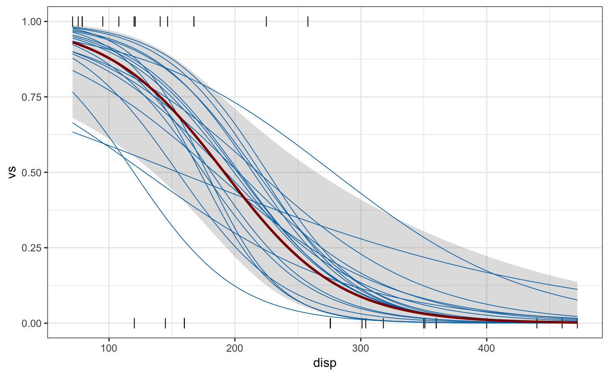
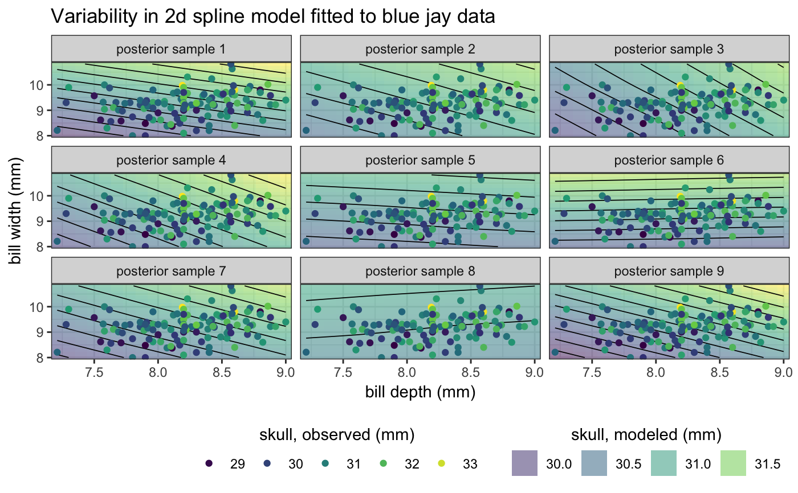

Sample outcomes from a fitted model (via sample_outcomes()) or calculate a
confidence band for the fitted model (via confidence_band()). Currently,
sampling of fitted models is only implemented for generalized additive models
fitted with mgcv::gam().
sample_outcomes(model, newdata, times = 20, key = ".draw", ...) # S3 method for gam sample_outcomes(model, newdata, times = 20, key = ".draw", unconditional = FALSE) confidence_band(model, newdata, level = 0.95, ...) # S3 method for gam confidence_band(model, newdata, level = 0.95, unconditional = FALSE)
| model | The fitted model to use for generating outcomes or calculating a confidence band. |
|---|---|
| newdata | A data frame containing the values of the model covariates at
which outcomes or confidence values should be calculated, as in
|
| times | Number of times outcomes should be drawn. |
| key | Character vector holding the name of the column indicating
separate outcome draws. Default is |
| unconditional | Bool indicating whether the smoothing parameter uncertainty
corrected covariance matrix is used ( |
| level | Confidence level. Default is 95%. |
library(mgcv)#>#>library(ggplot2) # gam spline fit fit <- gam(mpg ~ s(disp), data = mtcars, method = "REML") newdata <- data.frame( disp = seq( min(mtcars$disp), max(mtcars$disp), length.out = 100 ) ) sample_df <- sample_outcomes(fit, newdata, 10, unconditional = TRUE) conf <- confidence_band(fit, newdata, unconditional = TRUE) ggplot(mtcars, aes(disp, mpg)) + geom_ribbon(data = conf, aes(ymin = lo, ymax = hi), fill="#80808040", color = NA) + geom_point(color = "grey30", size = 0.5) + geom_line(data = sample_df, aes(group = .draw), color = "#0072B2", size = 0.3) + geom_line(data = conf, size = 1, color = "darkred") + theme_bw()# logistic regression fit fit <- gam(vs ~ disp, data = mtcars, family = "binomial") sample_df <- sample_outcomes(fit, newdata, 20) conf <- confidence_band(fit, newdata) ggplot(mtcars, aes(disp, vs)) + geom_ribbon(data = conf, aes(ymin = lo, ymax = hi), fill="#80808040", color = NA) + geom_point(color = "black", size = 3, shape = "|") + geom_line(data = sample_df, aes(group = .draw), color = "#0072B2", size = 0.3) + geom_line(data = conf, size = 1, color = "darkred") + theme_bw()# example in 2D data(BlueJays, package = "Stat2Data") fit <- gam(Skull ~ s(BillDepth, BillWidth), data = BlueJays, method = "REML") newdata <- expand.grid( BillWidth = seq(min(BlueJays$BillWidth), max(BlueJays$BillWidth), length.out = 20), BillDepth = seq(min(BlueJays$BillDepth), max(BlueJays$BillDepth), length.out = 20) ) sample_df <- sample_outcomes(fit, newdata, 9, unconditional = TRUE) ggplot(BlueJays, aes(BillDepth, BillWidth)) + geom_tile(data = sample_df, aes(fill = Skull), alpha = 0.5, color = NA) + geom_contour(data = sample_df, aes(z = Skull), color = "black", size = 0.3, binwidth = 0.2) + geom_point(aes(color = Skull), size = 1.5) + scale_fill_viridis_c( name = "skull, modeled (mm)", option = "D", guide = guide_legend( title.position = "top", order = 2, override.aes = list(alpha = 0.5) ) ) + scale_color_viridis_c( name = "skull, observed (mm)", option = "D", guide = guide_legend(title.position = "top", order = 1) ) + coord_cartesian(expand = FALSE) + xlab("bill depth (mm)") + ylab("bill width (mm)") + ggtitle("Variability in 2d spline model fitted to blue jay data") + facet_wrap(~.draw, labeller = as_labeller(function(x) paste0("posterior sample ", x))) + theme_bw() + theme( legend.direction = "horizontal", legend.position = "bottom", legend.justification = "right", legend.title.align = 0.5 )